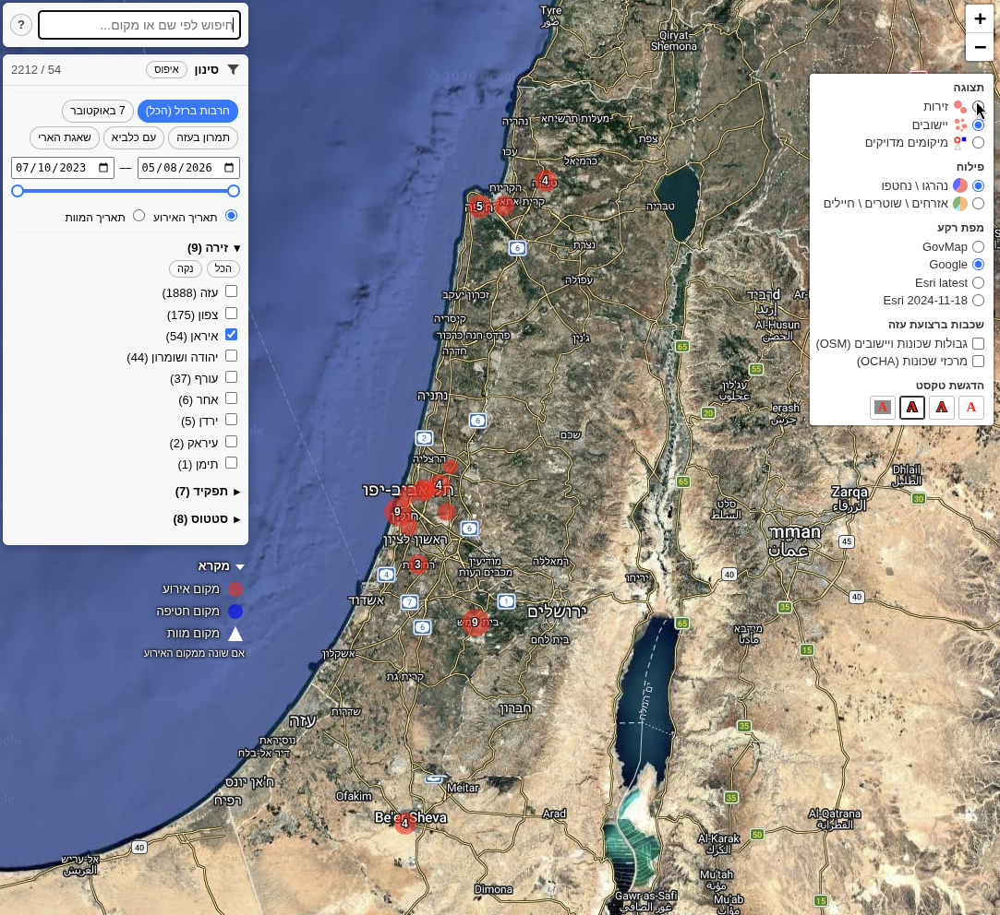

חמש תצוגות של אותה מפה. לחצו על כפתור כדי להחליף; הקישור מתחת למפה פותח אותה בחלון משלה.
המפה מציגה את הנרצחים, הנופלים והחטופים של מלחמת חרבות ברזל, מהשבעה באוקטובר 2023 ועד היום, על פי מאגר המידע של oct7database. לכל אדם מסומן מקום האירוע - המקום שבו נהרג או נחטף - ובמקרה שמת במקום אחר (למשל חטוף שנרצח בשבי, או פצוע שמת בבית החולים) גם מקום המוות.
המיקומים ידועים ברמות דיוק שונות. חלקם כתובת מדויקת, חלקם ידועים רק ברמת היישוב או השכונה, וחלקם מוכללים בכוונה: מיקומים מדויקים מוצגים רק במקומות שכבר פורסמו בתקשורת או במקורות פתוחים, וכל השאר מסומנים בעיגול בשטח היישוב. המפה מציעה שלוש רמות תצוגה:
לחיצה על סימון פותחת חלון עם רשימת האנשים שמאחוריו, כל אחד עם התאריך, השם והתפקיד. תיבת החיפוש בפינה מוצאת אדם לפי שם או מקום לפי שמו, וממקדת את המפה עליו.
למפה שני תפריטים: סינון משמאל, שקובע מי מוצג, ותצוגה מימין, שקובע איך. בצילום המסך שניהם פתוחים:

הכותרת של התפריט מציגה את המספר המוצג מתוך הכלל (בצילום: 54 מתוך 2212) וכפתור איפוס, שמחזיר את כל הסינונים ואת התצוגה למצב ההתחלתי. לחיצה על הכותרת פותחת וסוגרת את התפריט.
שורת הכתובת של הדפדפן משקפת תמיד את מה שמוצג: הסינון, רמת התצוגה, הפילוח, מפת הרקע,
המרכז והזום. כל מה שנשאר בברירת המחדל לא נכתב, כך שהכתובת הריקה
iron_swords_locations.html היא המפה כפי שהיא נפתחת, וכל פרמטר בכתובת הוא
משהו ששיניתם. כדי לשתף תצוגה מסוימת, פשוט העתיקו את הכתובת.
| פרמטר | משמעות | דוגמה |
|---|---|---|
front | זירה, אפשר כמה מופרדות בפסיק | front=Gaza,West+Bank |
role | תפקיד | role=חייל |
status | סטטוס | status=killed |
from, to | טווח התאריכים | to=2023-10-09 |
date=dd | סינון לפי תאריך מוות במקום תאריך אירוע | |
level | רמת תצוגה: fronts, places, marks | level=places |
category | פילוח: status או roles | category=roles |
base | מפת רקע: govmap, google, esri-latest, esri-2024-11-18 | base=govmap |
layers | שכבות ברצועת עזה: localities (גבולות), neighbourhoods (מרכזי שכונות) | layers=localities,neighbourhoods |
center, zoom | מרכז המפה והזום | center=31.4,34.5&zoom=11 |
pid | פתיחה על אדם מסוים לפי המזהה שלו במאגר | pid=964 |
המפה נבנית מטבלת המאגר ומתעדכנת איתה. הערות ותיקונים למיקומים יתקבלו בברכה דרך האתר הראשי.